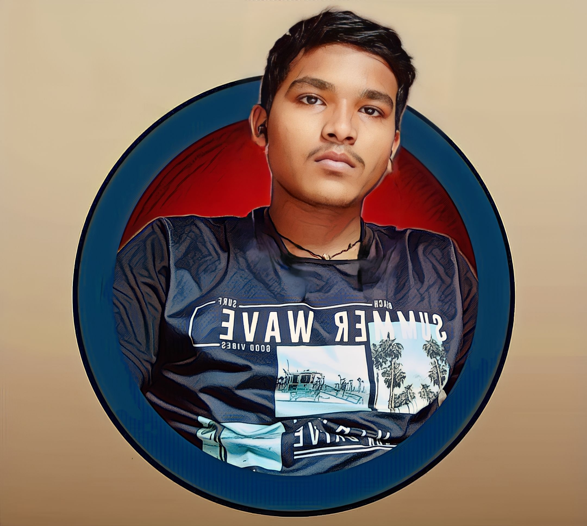
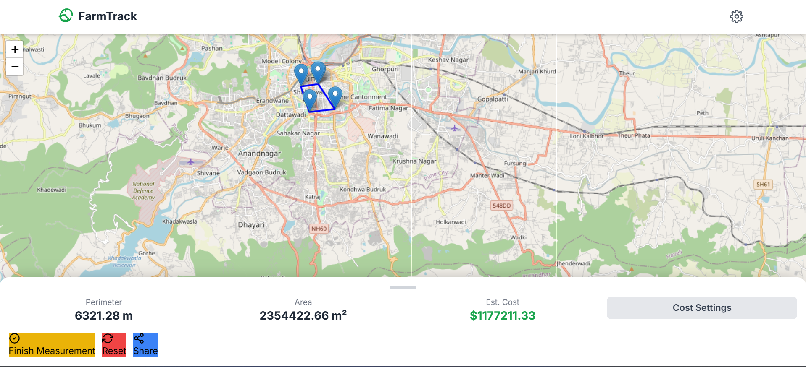
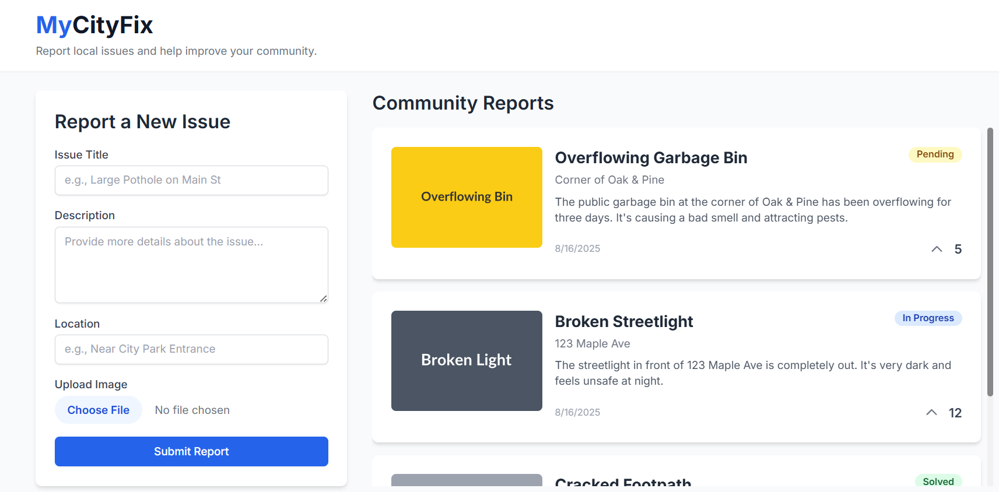

Hi, I'm Rajeev—a Curious and Resilient Software
Engineer.

About me
I’m a B.Tech Computer Science student passionate about software development, problem-solving, and web
technologies. I love building functional, user-focused projects and constantly explore new tools to grow
my skills.
With hands-on experience in C, C++, Python, and full-stack web development, I've built personal projects that combine creativity with real-world utility. I'm also certified in Python and C++ reflecting my dedication to continuous learning.
My goal is to build impactful software that solves real problems and contributes meaningfully to the tech ecosystem.
With hands-on experience in C, C++, Python, and full-stack web development, I've built personal projects that combine creativity with real-world utility. I'm also certified in Python and C++ reflecting my dedication to continuous learning.
My goal is to build impactful software that solves real problems and contributes meaningfully to the tech ecosystem.
Skills
Technical Skills
- Languages: C, C++, Python, JavaScript.
- Frontend: HTML5, CSS3, Tailwind, React.js
- Backend: Node.js, Express.js, REST APIs
- Version Control: Git,GitHub.
- Database: MongoDB
- Tools: VS code, Dev C++.
Core CS concepts
- DSA
- OOPs
- DBMS
- Operating System
- Computer Network
Exploring
- AI/ML
- Cloud Computing
- Cybersecurity
Soft Skills
- Communication
- Problem-Solving
- Teamwork
Experience & Activities
Python Trainee
Techspire College, Kathmandu, Nepal.
June 2024-July 2024
- Completed a comprehensive Python training program focused on data types, control structures, functions, object-oriented programming, file handling, and module usage.
- Strengthened analytical and logical thinking by solving various hands-on coding problems across varied difficulty levels.
- Applied learned concepts by building practical Python scripts and basic automation tasks simulating real-world use cases.
- Adhered to industry-standard coding practices with an emphasis on clean code, modular design, and version control using Git.
AI & Cyber Security Seminar - ING Skill Academy
Participated in a seminar focused on the intersection of Artificial Intelligence and Cyber Security. The session provided valuable knowledge on:
- Applications of AI in threat detection and prevention
- Understanding of common cyber vulnerabilities and attack methods
- Importance of ethical AI practices in data protection
- Awareness of the potential threats posed by AI in cyber security
Projects
FarmTrack - Offline Farm Area & Cost Estimator
Developed a GPS-based PWA to measure farm boundaries and estimate costs for fencing, seeds, and irrigation. Enabled offline access with Service Workers and multi-language support for rural users.
Tech Stack: HTML, CSS, JavaScript, Leaflet.js, Node.js,Express, MongoDB, PWA APIs.

MyCityFix - Geo-based Civic Engagement Platform
MyCityFix is a full-stack MERN web app that enables citizens to report local issues—like potholes, streetlight failures, or garbage overflow—on an interactive map. Users can upload images, upvote nearby complaints, and track their resolution status, while admins manage issues via a dedicated dashboard.
Tech Stack: HTML, CSS, JavaScript, React, Node.js, Express, MongoDB, Google Maps API / Mapbox, Cloudinary, JWT, Axios, Vercel, Render
